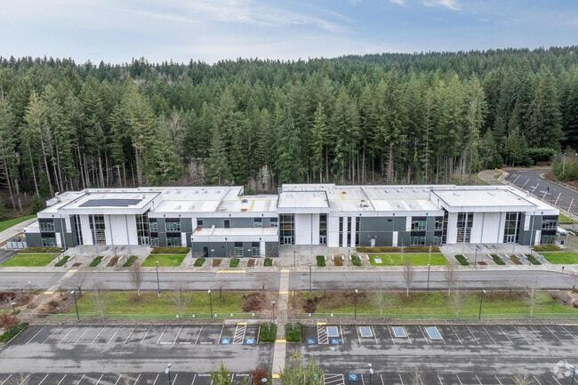

테슬라 STEM 고등학교(Tesla STEM High School)는 미국 워싱턴주 레드먼드에 위치한 명문 공립 STEM 마그넷 고등학교입니다. 마이크로소프트 본사가 있는 레드먼드·벨뷰 일대는 IT 기업이 밀집해 한국 주재원·이민 가정이 많이 거주하며, 이공계 진학에 강점을 둔 이 학교의 선호도가 높습니다.
학교 특징
테슬라 STEM은 이름 그대로 과학·기술·공학·수학(STEM) 중심의 프로젝트 기반 교육으로 잘 알려져 있습니다. 실제 문제를 팀으로 해결하는 PBL(프로젝트 기반 학습)과 인턴십, 폭넓은 AP 과목이 특징이며, 수학·과학 성취도가 워싱턴주 최상위권에 속합니다. 이공계·컴퓨터·엔지니어링에 관심 있는 학생에게 특히 잘 맞습니다.
한국 학생들이 테슬라 STEM에 진학하는 이유
① 시애틀 근교 IT 중심지의 STEM 명문이라 이공계 진학에 유리. ② 프로젝트·인턴십 등 실전 경험이 풍부. ③ 레드먼드·벨뷰 한인 커뮤니티가 잘 형성되어 정착이 수월. 다만 수학·과학의 강도와 프로젝트·발표 비중이 높아, 영어와 개념을 함께 잡는 관리가 필요합니다.
왜 1:1 과외가 필요한가요?
· 수학 과외 — STEM 과정의 수학은 알지브라·지오메트리 기초에서 프리캘큘러스, AP 미적분·통계로 빠르게 이어집니다. 1:1 수학과외로 개념을 탄탄히 다져야 공학·과학 프로젝트에서도 흔들리지 않습니다.
· 영어 과외 — 프로젝트 보고서와 에세이·발표(프레젠테이션)가 많아 영어 글쓰기·말하기가 중요합니다. 영어과외로 논리적 글쓰기와 발표를 훈련하면 내신과 수업 참여가 함께 좋아집니다.
· 과학 과외 — AP 물리·화학·생물, 공학 과목을 영어로 소화하려면 개념과 영어 용어를 동시에 잡아야 합니다. 1:1 과학과외로 실험·프로젝트를 함께 관리하면 좋습니다.
전학·내신 준비
테슬라 STEM으로 전학을 준비한다면 영어 에세이·발표와 수학 배치가 중요합니다. STEM 프로젝트에 들어가기 전 알지브라·지오메트리 기초를 다지고 영어 글쓰기·발표를 준비하면 초기 적응이 훨씬 수월합니다. 해외·타지역에 있어도 화상 수업으로 시차를 맞춰 관리합니다.
정리
테슬라 STEM 고등학교는 시애틀 근교의 STEM·AP 명문 공립 마그넷입니다. ① 수학은 기초(알지브라·지오메트리)부터 ② 영어는 에세이·발표 중심으로 ③ 과학은 개념+영어를 함께 준비하는 것이 핵심입니다. 전학 준비든 재학 내신이든, 30분 무료 상담으로 우리 아이 맞춤 계획을 먼저 세워 보세요. 해외에 있어도 화상 수업으로 동일하게 관리합니다.